Invoice Sidebar Buttons
Tip: Sidebar buttons are visible when FrameReady is in Form View mode.
Invoices Sidebar Buttons Overview
Void Invoice Button
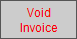
-
Used to void the current Invoice.
-
If the Invoice was created within the current month and has no payments entered, then a dialog box appears with the option to either: Void or Cancel.
If the Invoice shows money received, a dialog box appears stating, "This Invoice cannot be voided because it has a payment attached to it." Your only option is to click OK.
Before an Invoice can be successfully voided, you must remove the payment line. You may either delete the payment line or create a refund Invoice. Consult your accountant on best practices.
-
It is possible to unvoid an Invoice (but only an Invoice with no payments on it) by clicking again on the Void Invoice sidebar button.
Payment Report Button
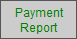
-
Generates a report of all receipts, since the last time the report was printed OR based on a date / range of dates.
-
The first option finds all receivables using a time stamp of the last printed report. When the report is printed a new time stamp replaces the existing one (the Print Preview will not reset the date/time feature of this report).
-
The second option is to enter your own date or range of dates, MM/DD/YYYY.
-
-
All payments received are sorted and compiled onto this report. The amount should balance with your cash drawer. You can make your bank deposits at any time; FrameReady time stamps when your last deposit was made and calculates all subsequent entries. During high volume sales, you can make more than one deposit per day! Payments are sorted by tender and totalled.
-
See: Payment Reports
Note: You can also print this report by a range of dates. This report differs from the End of Day Payment Report in that it tracks the date and time when the report was created. This creates a way of reconciling your receivables with your bank deposit at any time of day.
This report is also accessed by Main Menu > Payment Report.
Statement for this Customer Button
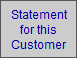
-
Generates a statement on a per-customer basis within a date range. Use the format MM/DD/YYYY...MM/DD/YYYY or simply click OK to see all entries.
-
If all the Invoices for this customer are "Paid in Full," then a dialog box appears stating, "There are no outstanding invoices for this customer". Click OK to resume.
-
If outstanding monies are owed by this customer, a print preview of the statement appears. Click the Continue button in the top right corner and the print dialog box will appear. Click Print or Cancel.
-
See: Customer Statements
Print Statements For Overdue Accounts Button
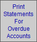
-
Finds all Invoices with a balance due, older than thirty days, and prints out a statement for each customer, including all subsequent Invoices with a balance due up to the present date.
-
Printed statements are designed to fit a #10 window envelope.
-
By default, FrameReady sets the search date for 'this day last month'
-
You can manually set your own parameters:
-
Use ...5/31/2023 to limit statements to the end of May
-
Use 5/1/2023...5/31/2023 to limit statements to the month of May
-
Use 5/1/2023... to limit statements to Invoices to May 1st and after
-
Leave blank to include all unpaid Invoices.
-
-
Optionally set Pause on Preview; optionally set Show Print Dialog box before each statement.
-
See: Customer Statements
Accounts Receivable Report Button
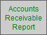
-
Receivables can be viewed, either sorted by Invoices, or by Customer with Aging subtotals, i.e., 30, 60, 90 and over. Each report serves a different purpose.
-
Presents a dialog box with the message, "Report by aging or by invoices?" with three buttons from which to chose: Cancel, Invoices or Aging.
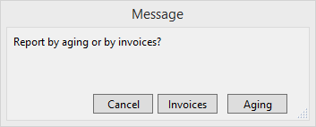
-
The Invoices choice presents another dialog box with two options:
-
"Enter a range of dates or leave blank to find all dated Invoices with an outstanding balance."
The printable report lists outstanding Invoices for the specified time period. Click Continue to print. -
"Enter a date to determine what your accounts receivable was as of that date."
A screen display of the ins and outs of your accounts receivable are listed with totals of Invoice, Payment and Balance at the bottom of the screen. Click Done to exit the screen.
-
-
The Aging choice shows the amount each customer owes. Use the buttons on the right side to send a PDF format of the statement by email, or to printed the statement for the customer.
-
See: Accounts Receivable Report by Customer, Accounts Receivable Report by Invoices
Invoice Options Button
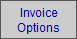
-
Offers a good choice of printing and other options for printing selections and auto entry of information. These options will help you to customize the program to meet your needs, and can be changed as needed.
-
The same options can be accessed by Main Menu > Invoices Options.
-
See also:
Invoice Options - General Tab
Invoice Options - Print Options Tab
Invoice Options - Rewards Tab
Note: If you are operating FrameReady on a network, then these default settings must be set up on the Host, otherwise they will revert back to their original setting when you shut down.
Sales Performance Button
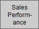
-
Generate a sales summary report for a specific period for all employees entered in the Sales Rep field.
-
The sales period is determined by entering a range of dates in the Sales Performance dialog box.
Shipping Address Button
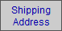
-
Click to view the shipping addresses stored in the Contacts file.
-
The default shipping address is shown. Choose another address from the list when needed (your choice is not saved back to the Contacts file).
-
Click the Add a New Shipping Address button to enter a new address into FrameReady. The changes are saved back to the Contacts file.
Perform Last Find Button
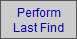
-
Very useful when updating a list of records. By clicking this button, FrameReady performs the last find you entered and returns your list of matching records.
-
If the record you modified no longer matches your search criteria, then it is excluded from the newly updated list.
For example, if you performed a find for all unpaid Invoices, then took a payment on one of them and then clicked Perform Last Find, the Invoice that is now paid in full no longer appears in the list. -
See: Find Overview
Apply $ to Multiple Invoices Button
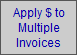
-
Use this feature to take a single payment from a customer and apply it to any unpaid invoices.
Find All Unpaid Invoices Button
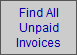
-
Finds all Invoices with a balance owing. They may have a deposit but will not be paid in full.
-
The Invoices display in a list view. If only one Invoice is found, it appears in the form view.
© 2023 Adatasol, Inc.